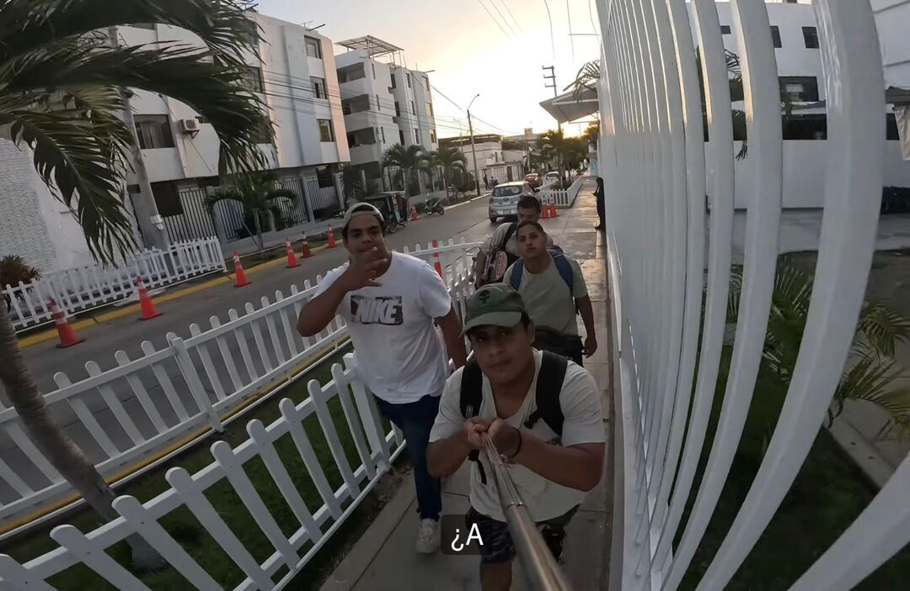
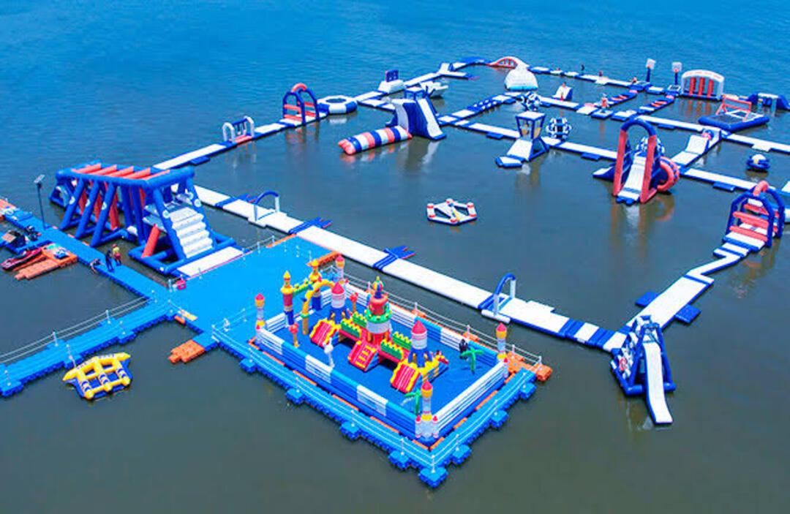
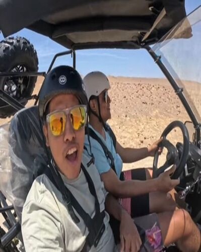
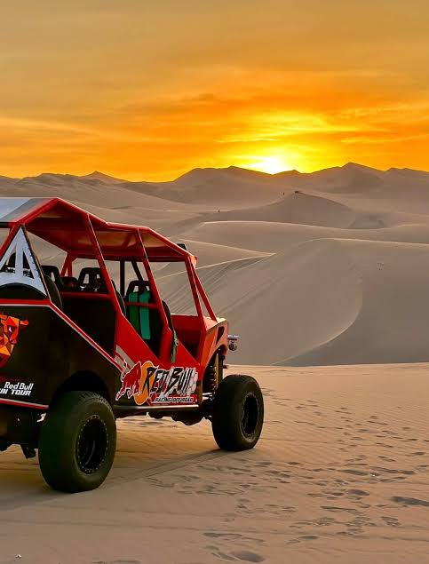

Las Cataratas de Caracucho son uno de los atractivos naturales más llamativos de la provincia de Morropón, ubicadas en el caserío de Caracucho, en el distrito de Santo Domingo. Se encuentran aproximadamente a 65 km de la ciudad de Piura.
¿Cómo llegar? Desde la ciudad de Piura:


Postres de Paty es un emprendimiento piurano reconocido por ofrecer una gran variedad de postres artesanales y productos de repostería. En su carta se pueden encontrar tortas, cheesecakes, tres leches, brownies, pies, cupcakes, alfajores, tartaletas, postres fríos y otras especialidades que destacan por su presentación y sabor.
La Meseta Andina es uno de los paisajes naturales más impresionantes de la sierra de Chalaco, ubicada entre los 2 900 y 3 150 m s. n. m. Se caracteriza por sus extensas planicies rodeadas de montañas, bosques de neblina, quebradas y miradores naturales que permiten contemplar gran parte de la sierra piurana.
Desde Piura:


Q' Tal Burger es una hamburguesería ubicada en la ciudad de Piura, reconocida por ofrecer hamburguesas artesanales, salchipapas, sándwiches y diferentes promociones para compartir. Entre las opciones más solicitadas se encuentran la Cheese & Bacon, la Hawaiana y la Peruana, además de promociones para dos o más personas.
Huaraz es la capital del departamento de Áncash y uno de los principales destinos turísticos del Perú para quienes disfrutan de la naturaleza y los deportes de aventura. Se encuentra a 3 052 m s. n. m., en el valle del Callejón de Huaylas, rodeada por la imponente Cordillera Blanca y la Cordillera Negra.
Como llegar:

